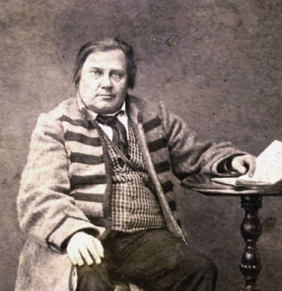
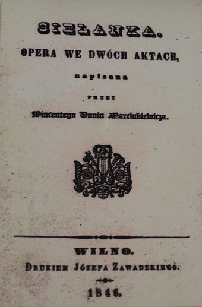
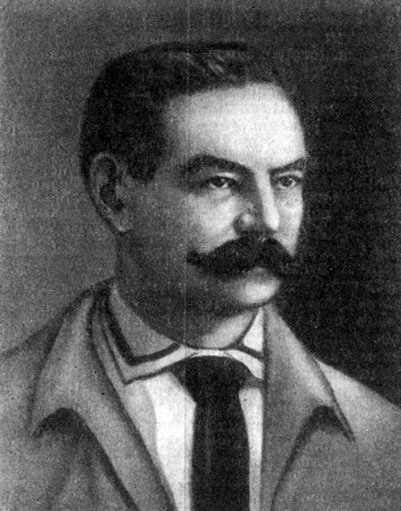
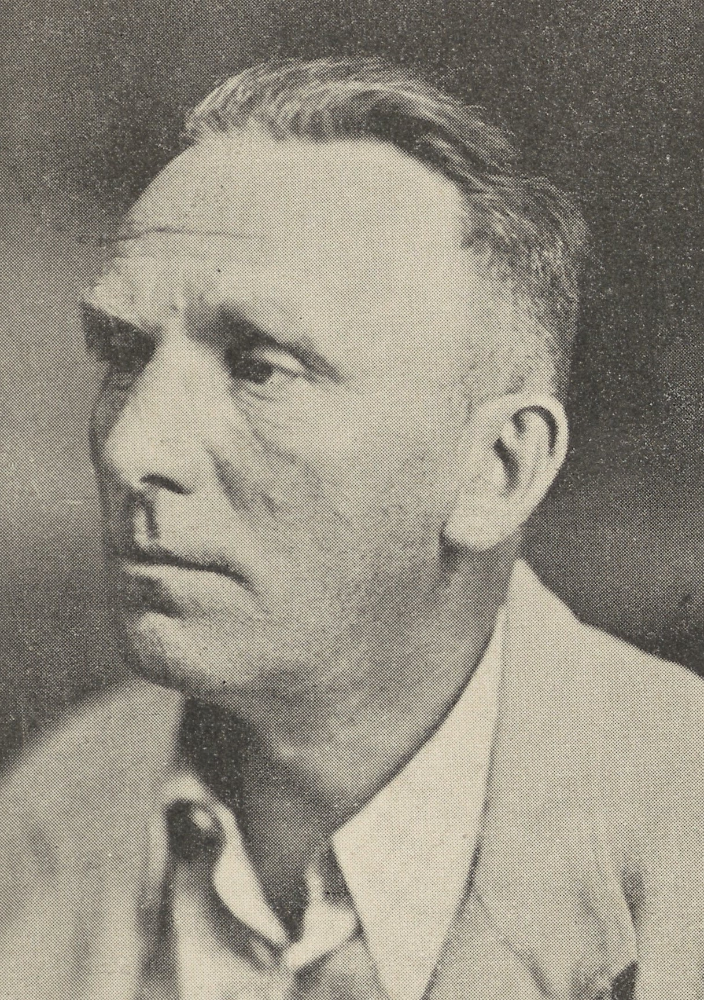

Театр Беларуси XIX века
XIX век стал временем, когда театральное искусство Беларуси прошло путь от крепостных трупп при магнатских дворах до первых попыток создания национального профессионального театра. Этот путь отразил все противоречия эпохи: культурное развитие региона, политику русификации, цензурные ограничения и постепенное пробуждение национального самосознания.
Крепостной театр и его традиции
В первой половине XIX века доминирующее место в театральной жизни Беларуси занимали крепостные частные театры, которые принадлежали крупным магнатам. Наиболее значительными из них были Несвижский и Слуцкий театры Радзивиллов, Слонимский театр Огинских, Гродненский крепостной театр А. Тизенгаузена, а также театры Тышкевичей в Свислочи и Плещеницах. Эти театры по своему уровню приближались к профессиональным: они ставили драматические, оперные и балетные спектакли, а их артисты нередко достигали высокого мастерства.
Помимо магнатских театров, в имениях богатой шляхты создавались небольшие театры, оркестры и капеллы. Среди них наиболее известными были крепостные театры в Могилёве, Горы-Горках, Дукорах, Чечерске. Могилёвский театр графа Чернышова отличался особенно высоким профессиональным уровнем артистов. На его сцене ставились оперные спектакли, в которых принимали участие как крепостные артисты, так и приглашённые оперные артисты из Петербурга, итальянская оперная труппа и хоровая капелла.
Цензура и театральная реформа
Однако крепостной и любительский театры были сословно замкнутыми, «закрытыми» учреждениями. Они обслуживали узкий круг зрителей и функционировали, как правило, непостоянно. Основной функцией этих театров (особенно крепостного) была развлекательная, что не вызывало возражений со стороны властей.
Ситуация начала меняться в 1830-1840-е годы, когда всё более широкое распространение стал получать коммерческий, предпринимательский театр - профессиональный театр качественно нового типа. Его возникновение было объективно обусловлено потребностями дальнейшего духовного, культурного и политического развития общества. Новый театр открывал двери в зрительный зал потенциально всем слоям населения, широкой «низовой» публике, демократическому зрителю.
В начале XIX века сформировалась специальная система правительственного контроля над содержанием деятельности театральных коллективов. В июне 1804 года был обнародован так называемый «Устав о цензуре», а в 1811 году заложены первые камни в правительственный институт многоступенчатой театральной цензуры. Театральное дело с этого времени попало под непосредственный полицейский надзор.
В 1845-1847 годах в соответствии со специальным постановлением Комитета министров в Северо-Западном крае была проведена театральная реформа. Реформа декларировала исключительное право театров губернских городов на сценические показы в пределах своей губернии. Странствующие труппы признавались незаконными и запрещались. Театр поступал «в ведение особой дирекции, которая назначалась начальником губернии». Политический смысл театральной реформы был очевиден.
Первая национальная труппа В. Дунина-Марцинкевича

Винцент Дунин-Марцинкевич (1808-1884)
Знаменательной вехой в театральной жизни Беларуси стало создание первой национальной труппы В. Дунина-Марцинкевича. На рубеже 1840-1850-х годов драматургом был создан музыкально-драматический кружок, в состав которого входили 20 человек, в том числе и сам Дунин-Марцинкевич. Театральный коллектив выступал преимущественно в фольварке Люцинка (собственность драматурга), Минске, Бобруйске, Глуске и других местах.

«Селянка»
Члены кружка приняли участие в постановке 9 февраля 1852 года комической оперы «Селянка». Либретто оперы на польском и белорусском языках было написано В. Дуниным-Марцинкевичем, а музыка - композитором С. Монюшко. Для исполнения оперы был привлечён оркестр, а также хор, составленный из крестьян имения Люцинка. Особым успехом у слушателей пользовались народные песни.
В тот же день, на который была назначена премьера, пришёл устный приказ, а затем и письменный - о запрете спектаклей на «простонародном языке». Но поскольку местные власти уже дали разрешение на постановку, спектакль в назначенный день был показан. Спектакль игрался в городском театре. Сценическое зрелище, как отмечалось в тогдашних отзывах, вышло очень ярким, живописным и оставляло большое эмоциональное впечатление.
В дальнейшем, несмотря на запрет властей, постановки «Селянки» неоднократно ставились в Минске, Бобруйске, Слуцке, Несвиже, Глуске. Однако спектакли проходили уже не в театральных помещениях, а в частных домах. Театр В. Дунина-Марцинкевича сохранил народные традиции искусства, отличался демократизмом, пробуждал национальное самосознание у зрителей, оставил заметный след в истории белорусского сценического искусства.
Театр после восстания 1863 года
После подавления восстания 1863 года на Беларусь обрушилась волна правительственных репрессий. В культурной жизни были запрещены все мероприятия, которые происходили не на русском языке. Белорусский национальный театр В. Дунина-Марцинкевича, который и до этого существовал на полулегальном положении, вынужден был фактически прекратить свою деятельность, а сам писатель за поддержку повстанцев в 1864 году был арестован и до декабря 1865 года находился в минской тюрьме.
Новый генерал-губернатор Северо-Западного края К. фон Кауфман писал могилёвскому губернатору 24 апреля 1866 года относительно открытия местного театра: «Считаю необходимым высказать вам своё мнение, что эпитет "русский", придаваемый Могилёвскому театру, я считаю совершенно излишним и лишённым всякого значения, потому что в доверенной вам губернии, имеющей русское население, кроме русского иного театра быть не может». Население Беларуси, таким образом, ставилось перед фактом правомерного существования только русского театра.
Гастроли и любительские объединения
На сцене белорусских театров (5 июня 1890 года впервые был открыт постоянный театр в Минске) в это время гастролировали труппы из Москвы и Петербурга, украинские театры М. Кропивницкого и М. Старицкого. Гастрольные выступления украинских театральных коллективов играли весьма заметную роль в театрально-художественной и культурно-общественной жизни Беларуси в последние десять лет XIX века.
Руководители украинских театральных коллективов, чтобы получить возможность играть, были вынуждены называть свои труппы русско-малорусскими. В общем репертуаре заезжих «русско-малорусских трупп», показанных на сценических площадках Беларуси, насчитывалось свыше тридцати названий постановок драматических и музыкально-драматических произведений украинских авторов.
Творческая деятельность на Беларуси русских и украинских театральных коллективов благотворно влияла на процессы развития любительского искусства. Со временем театральное любительство становилось явлением всё более распространённым, охватывало уездные и заштатные города и местечки от Могилёвщины до Гродненщины.
В 1880-1890-е годы разрозненные коллективы любителей искусства начали самоорганизовываться прежде всего в губернских городах в более или менее крупные любительские объединения - художественно-творческие кружки и общества. Это Минское музыкально-литературное товарищество (1880), Гродненское литературно-музыкальное товарищество (1883), Полоцкий музыкально-драматический кружок любителей (1884), Брест-Литовское музыкально-драматическое товарищество любителей (1885), Могилёвское музыкально-драматическое товарищество (1886), Гомельский музыкально-драматический кружок (1891), Бобруйский музыкально-драматический кружок (1892) и другие.
Любительский театр Беларуси второй половины XIX века был той почвой, которая сохранила ростки белорусского профессионального театра, взращённые В. Дуниным-Марцинкевичем.
Ключевые имена

Игнат Буйницкий (1861-1917)
Винцент Дунин-Марцинкевич (1808-1884) - основатель первой национальной труппы, автор первой белорусской оперы «Сялянка», драматург и поэт. Его труппа стала первой попыткой создать национальный профессиональный театр.
Станислав Монюшко (1819-1872) - композитор, автор музыки к опере «Сялянка», родился на Минщине.
Игнат Буйницкий (1861-1917) - танцор, организатор первого белорусского передвижного театра.
Франтишек Олехнович (1883-1944) - драматург, режиссёр, автор книги «Беларускі тэатр» (1924).

Франтишек Олехнович (1883-1944)